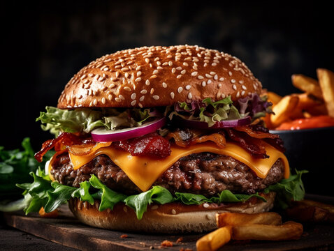

O melhor Hamburguer da região!

Apresentamos o nosso irresistível hambúrguer gourmet, uma explosão de sabor que vai conquistar o seu paladar em cada mordida. Começamos com um pão macio e fresquinho, que envolve uma suculenta carne grelhada no ponto perfeito. Por cima, derretido, o queijo adiciona uma cremosidade irresistível, enquanto o bacon crocante oferece um toque defumado inigualável. Para a frescura e textura perfeita, acrescentamos alface crocante e tomate suculento, tudo harmonizado com nosso molho especial secreto, que proporciona um equilíbrio único de sabores. E para finalizar, a cebola adiciona um toque levemente picante e aromático, elevando cada camada deste hambúrguer a um nível de delícia incomparável. Experimente o nosso hambúrguer e deixe-se levar por uma experiência gastronômica única e inesquecível.
Menu

Xburguer
$14,99
Apresentamos o X-Burger, uma explosão de sabores clássicos em cada mordida. Entre dois pães macios, encontrará uma suculenta carne grelhada, queijo derretido, bacon crocante e uma combinação fresca de alface, tomate e cebola. Tudo isso é complementado por nosso molho especial, criando uma experiência irresistível para os amantes de hambúrguer. Experimente o X-Burger e descubra o sabor autêntico do hambúrguer tradicional.

X-Tudo
$21,99
Apresentamos o X-Tudo, um hambúrguer completo que combina todos os sabores clássicos em uma experiência única. Entre duas fatias de pão macio, você encontrará uma suculenta carne, queijo derretido, bacon crocante, alface fresca, tomate suculento, cebola picante e nosso molho especial. Um verdadeiro deleite para os amantes de hambúrgueres que buscam uma experiência gastronômica completa e deliciosa.

X-Salada
$16,99
Apresentamos o X-Salada, uma combinação perfeita de sabores frescos e deliciosos. Entre dois pedaços de pão macio, você encontrará uma suculenta carne grelhada, queijo derretido, bacon crocante, alface crocante, tomate suculento, cebola refogada e um molho especial que realça cada ingrediente. É a escolha ideal para quem busca um hambúrguer clássico com uma explosão de frescor em cada mordida.
X-Bacon
$18,99
Apresentamos o X-Bacon, um clássico irresistível que eleva o sabor do hambúrguer a outro nível. Entre dois pedaços de pão macio, você encontrará uma generosa porção de carne grelhada, queijo derretido, fatias crocantes de bacon, alface fresca, tomate suculento, cebola refogada e nosso molho especial que adiciona um toque de sabor único. Prepare-se para uma explosão de sabores em cada mordida deste hambúrguer que é simplesmente delicioso.